かに風味ブログ
-
カニの金沢(1)タレルのガスオーブン（ガスワークス）
カニ友達とカニ食べ突貫金沢紀行。 羽田ー小松って初めて利用したけど、ちょっとしか飛行時間めちゃくちゃ短いのねー。 シートベルト着用サインが消えている時間の短いこと… というわけで、ちょっとだけ観光…
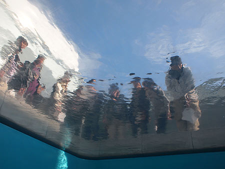
-
カニ王国(2)寿司
真鯛、蟹、のどぐろ、赤螺、鮑、白子、鰤トロ、大トロ、ホワイトサーモン。 やっぱり抜群に美味しかったのはのどぐろ。 ホワイトサーモン？なるものはこってりとしたバターのような脂で、酢飯に良くあっていたで…
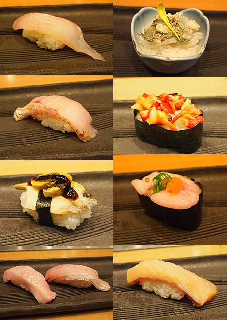
-
カニまみれカニ地獄カニの襲来
カニです。 カニ！ …たぶん私の前世は蟹食い猿だったはず…ってぐらいカニが好き。 にしても、女子ってカニ好きよねー。やっぱり尿酸値を気にしなくていいからなのかなー？ というわけでカニまみれの夜。…
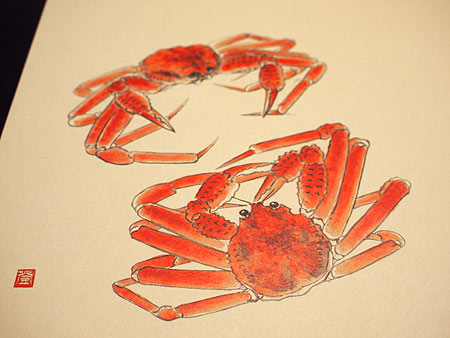
-
シガーの夜
銀座のバーにてシガー… ふらっと入ったとこで、店名があやしいうえに、また行けるかどうかも怪しい… …というか、ほんとに存在する店なのか記憶も怪しいバーなのだけど、唯一確かなのは、こうして写真が残って…

-
ひさしぶりの材木座BC
ひさしぶりに浜歩きいたしました。 天気は上々、気温も丁度良い感じ。 波にほんろうされる笹の葉のようなサーファーがひらひら。 波間のタイムカプセルに乗って会いに来てくれた陶片たち。 青磁ってやっ…
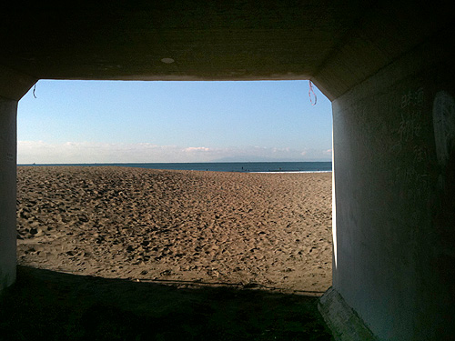
-
築地「清寿」天ぷら
ご縁があって、ミシュランひとつ星の天ぷら屋さん「清寿」にご招待いただきました。 店内は能舞台のように、無駄をそぎ落とした空間。カウンターのむこうに、一輪差しが壁にかけてあるだけ。 こちらの天ぷらは…

-
みんなありがとう！
そんなこんなで、退院済みです。 皆さまに感謝と愛を！ 写真は入院中の屋上。 ドラマとかではよく見かける病院の屋上。まさか自分が主役になるとはなー。

-
入院カレンダー
twitterではあれこれ実況していたのだけど、入院しておりました。 各方面からいただいた励ましにはホントーに感謝！ 身体が弱ると心細くて、なんだか不幸探しをしてしまうようなこともあったけど、 みんな…
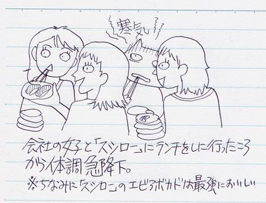
-
入院生活
そんなこんなの入院生活。 退屈で退屈で仕方がない！！！ …と聞いておりましたが、ぜんぜん退屈を感じない。体調悪い状態を抜かせばかなり快適な環境。 ここしばらく切羽詰まった状態の仕事が多くて、ぎゅっ…
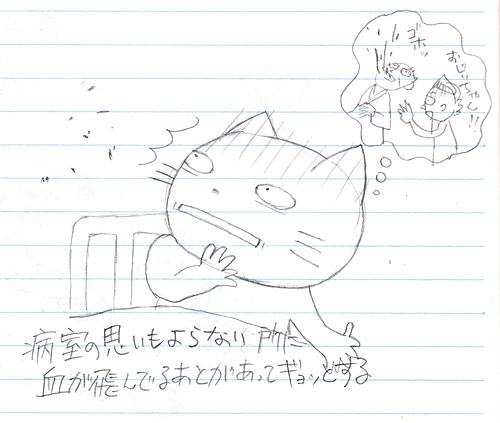
-
猫の居る休憩所＠池袋
猫好きなのに、初猫カフェ。 おまけの、はるな愛。タイフードマーケット＠池袋西口に来てた。

-
今年のサンバ
…も、無事終了してます。 今年はさらっと通りすがりに見物なので、画像少なめで。
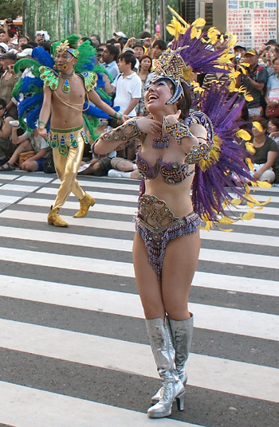
-
イタリアワインの会3
イタリアワインの会も3回目。 本日はイタリアワイン界では有名なソムリエ、内藤和雄さんがいらっしゃるお店に。 繊細なスパークリングからスタート。 とても上品な泡立ちでするんと喉に落ちる。 アミュ…
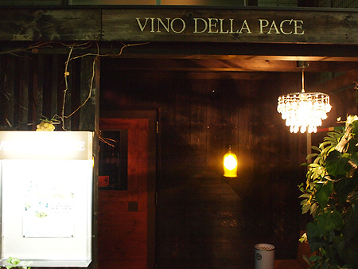
-
わたくしとゴルフ
誕生日を迎えました。 そろそろなにか新しいことをやってみようかとゆーわけで、ゴルフです。 市場が大きい趣味だし、ひとりでもくもくと出来るスポーツでもあるということで 覚えておいて損はないかな…と。 …
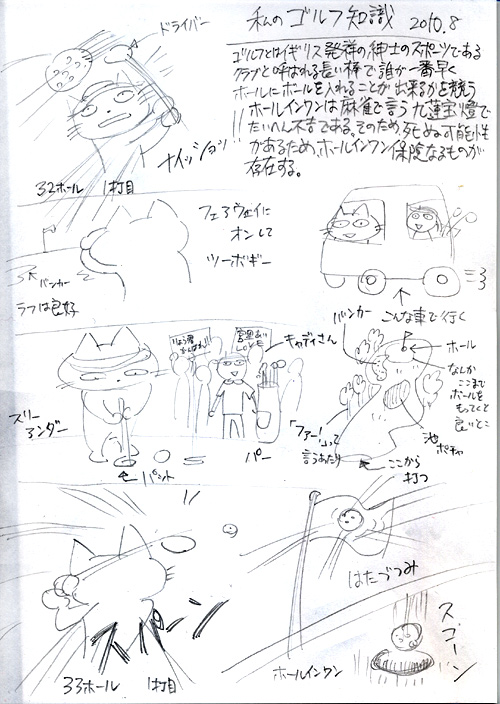
-
OLIMPUS E-PL1 試し撮り
デジカメ変えました。 コンデジと一眼レフを使い分けていたのだけど、機動性を取ると写りはイマイチだし、写りを取ると荷物がかさばる… とゆーわけでミラーレス一眼にいたしました。 今、宮崎あおいちゃんがCM…
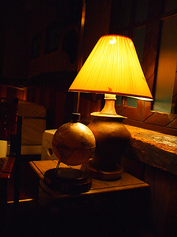
-
イタリアンの会2
備忘録です。 フルーツトマトとモッツアレラ、トマトピューレ。 チーズのおやき（名前失念…あああ） パン3種。ハーブとナッツとフルーツの入ったパンがうんまい。 帆立のソテー。だだちゃまめとイン…
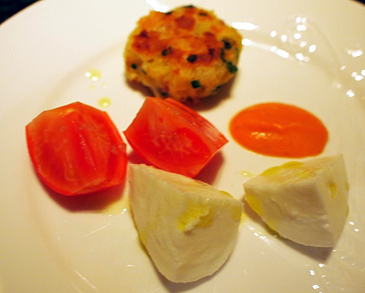
-
トムカーガイ＋クン
一年で暑さMAXの頃合いになると、トムヤムクン、トムカーガイが飲みたくなる。 自分の中で「この暑さはタイの暑さ！！」ってスイッチ入るみたい。 でも、タイもトーキョーもそんな暑さは変わらないよーな感じだ…
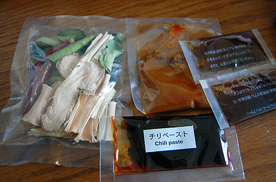
-
イタリアワインの会
生ハムとトウモロコシのジェラート…に、サマートリュフ！ トウモロコシの甘みで生ハムのしょっぱさも良い塩梅。 サマートリュフ。贅沢。早松同様香りが優しい。 アンティパスト ・しまえび2種とウニ ・キ…

-
隅田川花火大会＠復習
さて、イベントあれこれの浅草界隈最大のお祭り「隅田川花火大会」開催でございます。 写真の時間は4時ぐらいかな。まだ人は少なめ。普段より浴衣比率が60%UPって感じ 銀座線駅前。普段の土曜だとこの四…
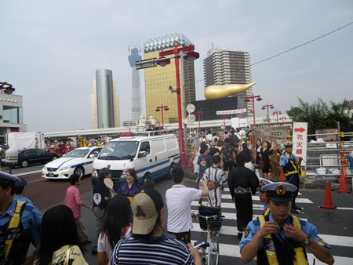
-
ここ最近総集編
さて、総集編でございます。 銀座のワインバーにてテイスティング祭り 1993と2004のブルゴーニュ。 グリオット・シャンベルタン、ヴォーヌ・ロマネ、ニュイサンジョルジュ1er、クロ・ド・ヴージョ、…
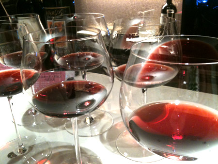
-
台湾 変身写真
1ヶ月前の台湾旅行。 こっそり変身写真なるものに挑戦してました。えへへ。 アルバムがようやく届いたのだけど、あははー立派にレタッチ入れられてるわー。 私も仕事でフォトレタッチ作業を行うものだから、レ…